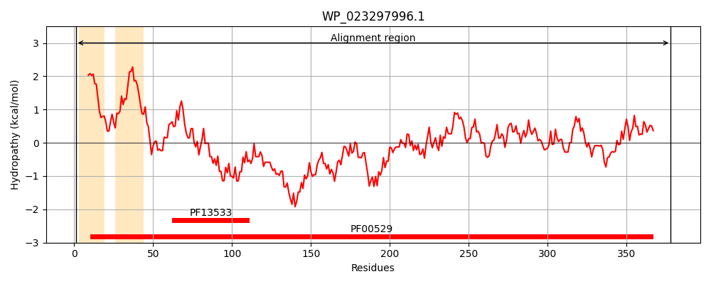
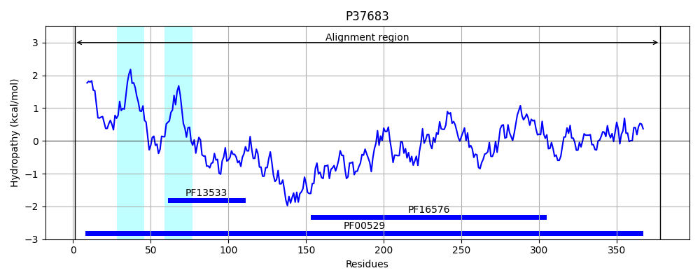
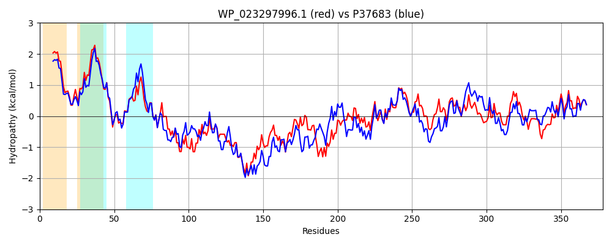

Hit Accession: P37683
Hit TCID: 8.A.1.1.4
Hit Description: gnl|BL_ORD_ID|10133 gnl|TC-DB|P37683|8.A.1.1.4 Inner membrane protein yiaV OS=Escherichia coli (strain K12) GN=yiaV PE=1 SV=1
Mach Len: 378
e:0.000000
Query TMS Count : 2
Hit TMS Count: 2
TMS-Overlap Score: 0.850000
Predicted Substrates:None
BLAST Alignment:
Score: 1192 , Bit scores: 463 bits, E-value: 5.6e-164, Alignment length: 378, Percentage identity: 59
Query: 1 MDLLIILCYVAIAWGVFKIFRIPVNKWTIPTAILGGIVVVGALILTMNYNHPYTLRAQKIVVSIPMVPQVSGEVVEVTTKTNVLMKKGELLFRIDDTRYRARLNKLQADLAAEEATLRAKQATIDDASARVQQAQAEYDRVTRDYQRYAQGAAMPVNPFSEQDVTHARQQVQIQTAVLQAAKAQLQNAREQVSGRYNGLDANIASLKSQILEAEYNLAQTVVRAPSDGYVTQLLARPGMTAVRLPFKPVLVFIPQQKRQVVAVFRQNSVLRLTAGDSAEVVFNGLPGSVYSGKVSRVLPAIPDGSYQASGALQGLSAGAGKEGIYVLIDLDPHPEVEHLPDGVSAQAAVYTDYFAHVSIMRKVLLRMTSWLHYLYLDH 378
MDLLIIL YVA AW +FKIF+IPVNKWTIPTA LGGI +V LIL MNYNHPYT +AQK V+SIP+VPQV+G V+EVT K N L+KKGE+LFR+D TRY+AR+++L AD+ E RA A +D+ +A QQA+A D+ ++YQRYA+G+ VNPFSE+D+ ARQ Q A ++++ A+ + + Q+ G + IASLK+Q+ EA+YNL QT+VRAPSDGYVTQ+L RPG A LP +PV+VFIP QKRQ+VA FRQNS+LRL GD AEVVFN LPG V+SGK++ + PA+P G+YQ++G LQ L+ G +G+ I+LD H ++ LPDG+ AQ AVY+D+F+HVS+MRKVLLRMTSW+HYLYLDH
Sbjct: 1 MDLLIILTYVAFAWAMFKIFKIPVNKWTIPTAALGGIFIVSGLILLMNYNHPYTFKAQKAVISIPVVPQVTGVVIEVTDKKNTLIKKGEVLFRLDPTRYQARVDRLMADIVTAEHKQRALGAELDEMAANTQQAKATRDKFAKEYQRYARGSQAKVNPFSERDIDVARQNYLAQEASVKSSAAEQKQIQSQLDSLVLGEHSQIASLKAQLAEAKYNLEQTIVRAPSDGYVTQVLIRPGTYAASLPLRPVMVFIPDQKRQIVAQFRQNSLLRLAPGDDAEVVFNALPGKVFSGKLAAISPAVPGGAYQSTGTLQTLNTAPGSDGVIATIELDEHTDLSALPDGIYAQVAVYSDHFSHVSVMRKVLLRMTSWVHYLYLDH 378 | Protein Hydropathy Plots: |
|---|
|  |  |
Pairwise Alignment-Hydropathy Plot:
|
|---|
|  |